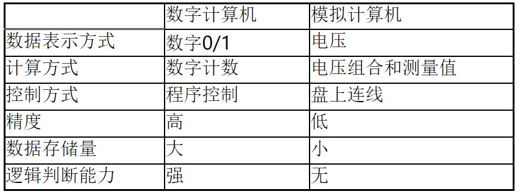

计算机组成原理
第1章 ：计算机系统概述
1.1 计算机的分类
电子模拟计算机
特点：数值由连续量来表示，运算过程也是连续的
电子数字计算机
特点：按位运算，并且不连续地跳动运算
- 通用计算机： 性能指标从上到下依次递减
- 超级计算机 ：主要用于科学运算，运算速度每秒万亿次以上，数据存储大，价格贵（天河2号）
- 大型机
- 服务器（小型机）
- PC机
- 单片机 ：只用一片集成电路做成的计算机，体积小，结构简单，性能指标低，价格便宜
- 多核机 ：多余一个处理器的计算机芯片
专用计算机：
针对某一任务设计的计算机，一般来说其结构比通用计算机简单。
- 通用计算机： 性能指标从上到下依次递减
1.2 计算机的发展简史
世界上第一台电子数字计算机是1946年在美国宾夕法利亚大学制成，1800多个电子管，30吨，运算速度5000次每秒。
1.2.1 计算机的五代变化
- 第一代：1946—1957年，电子管计算机。 数据处理机开始得到应用。
- 第二代：1958—1964年，晶体管计算机。工业控制机开始得到应用。
- 第三代：1965—1971年，中小规模集成电路计算机。小型计算机开始出现。
- 第四代：1972—1990年，大规模和超大规模集成电路计算机。微型计算机开始出现。
- 第五代：1991年开始的巨大规模集成电路计算机。单片机开始出现。
1.2.2 半导体储存器的发展
20世纪50—60年代，所有计算机的储存器都是由微小的铁磁体环（磁芯）做成。每个磁芯约1mm。
从1970年开始，半导体储存器经历了11代：单个芯片1KB、4KB、16KB、64KB、256KB、1MB、4MB、16MB、64MB、256MB、和现在的1G （2013年）。其中 1K=2^10、1M=2^20、1G=2^30。
*1.2.3 微处理器的发展 *
1971年Intel公司开发出Intel 4004。这是第一个将CPU的所有元件都放入同一块芯片内的产品，于是，微处理器诞生了。
微处理器演变中的另一个主要进步是1972年出现的Intel 8008，这是第一个8位微处理器，它比4004复杂一倍。 1974年出现了Intel 8080。这是第一个通用微处理器，而4004和8008是为特殊用途而设计的。8080是为通用微机而设计的中央处理器。
20世纪70年代末才出现强大的通用16位微处理器，8086便是其中之一。
这一发展趋势中的另一阶段是在1981年，贝尔实验室和HP公司开发出了32位单片微处理器。 Intel于1985年推出了32位微处理器Intel 80386。
到现在的64位处理器和多核处理器。1.2.4 计算机的性能指标
吞吐量：表征一台计算机在某一时间间隔内能够处理的信息量。
响应时间：表征从输入有效到系统产生响应之间的时间度量，用时间单位来表示。
利用率：在给定的时间间隔内系统被实际利用的时间所占的比率，用百分比表示。
处理机字长（机器字长）：指处理机运算器中一次能够完成二进制数运算的位数，如32位、64位。
总线宽度：一般指CPU中运算器与储存器之间进行互连的内部总线二进制位数。
存储器容量：存储器中所有存储单元的总数目，通常用KB、MB、GB、TB来表示。
存储器带宽：单位时间内从存储器读出的二进制数信息量，一般用字节/秒表示。
主频/时钟周期：CPU的工作节拍受主时钟控制，主时钟不断产生固定频率的时钟，主时钟的频率（f）叫CPU的主频。度量单位是MHz（兆赫兹）、GHz（吉赫兹）。
CPU执行时间：表示CPU执行一般程序所占用的CPU时间：
$$
CPU执行时间 = CPU时钟周期数 × CPU时钟周期（1/f）
$$CPI：表示每条指令周期数，即执行一条指令所需的平均时钟周期数：
$$
CPI = 执行某段程序所需的CPU时钟周期数 ÷ 程序包含的指令条数
$$MIPS：表示平均每秒执行多少百万条定点指令数：
$$
MIPS = 指令数 ÷ （程序执行时间 × 10^6）
$$FLOPS：表示每秒执行浮点操作的次数，用来衡量计算机浮点操作的性能：
$$
FLOPS = 程序中的浮点操作次数 ÷ 程序执行时间（s）
$$